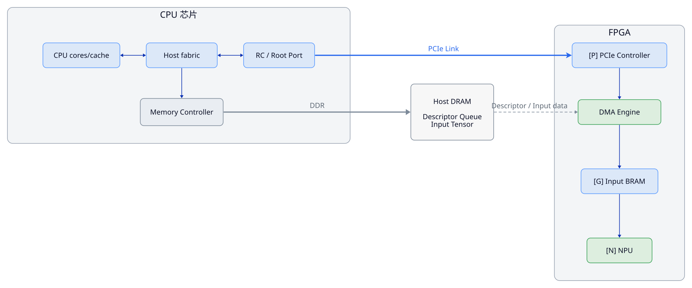
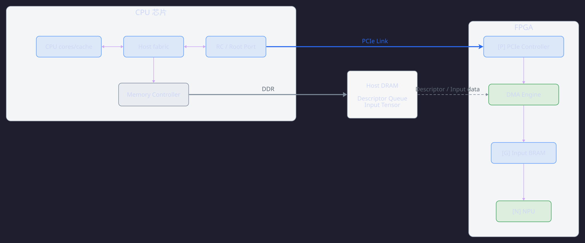
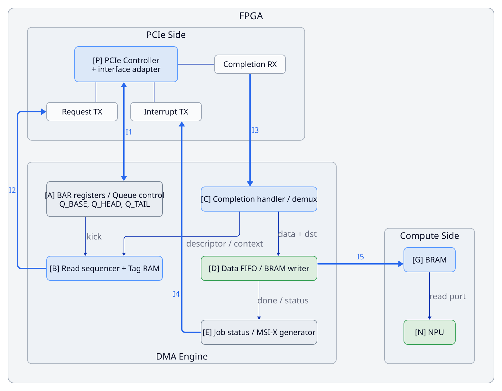
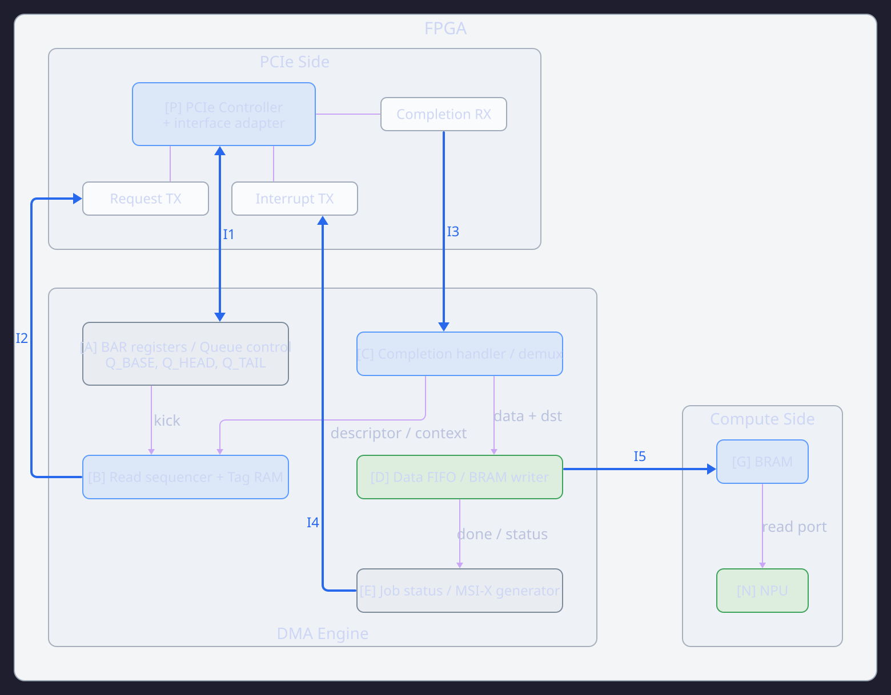
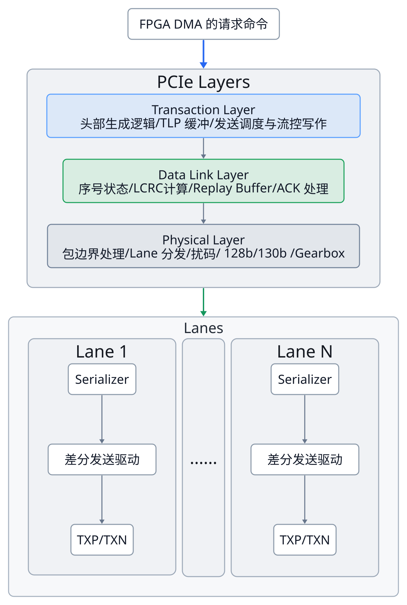
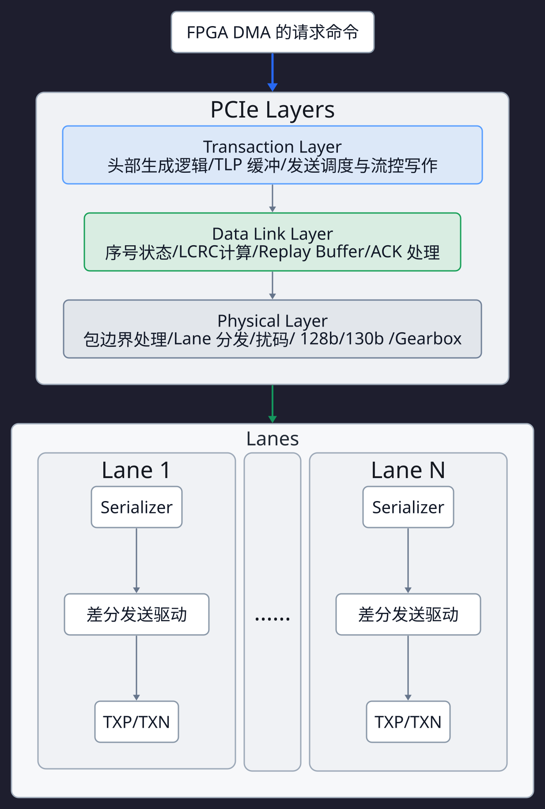

PCIe 与 DMA：硬件设计与数据通路¶
本文以 CPU-FPGA 系统为例，介绍 PCIe, DMA 相关模块的底层硬件设计与数据通路相关内容。
I. Example Architecture¶
考虑一个板级互联系统，CPU 与 FPGA 通过 PCIe 连接，CPU 运行操作系统和主机软件，FPGA 负责运行神经网络推理。权重保存在 FPGA 内部，输入数据需要从主机内存搬运至 FPGA 计算侧。NPU 在这里指 FPGA 内执行神经网络计算的硬件。P 包含 PCIe Controller，以及将厂商接口适配为下述接口的少量逻辑。
CPU-FPGA 系统架构：
 
FPGA 内部展开：
 
探讨分析：
- PCIe 在硬件中的模块组成
- DMA 在硬件中的模块组成
- 一次真实的、运行在 PCIe 上的 DMA 传输的完整数据通路
II. An Example DMA Read Task¶
我们以如下 DMA 任务为例：
FPGA 通过 DMA (运行在 PCIe 链路) 的方式，从 CPU DRAM 获取一段 Input Tensor 数据，进行神经网络推理。
探索每个环节在硬件侧到底会发生什么事情、哪些模块参与数据通路、接口/信号如何变化等细节。本文意图打通 “软件程序——协议规范——硬件底层” 整个图景，作为 baseline。后面想要了解其他更高级的概念只需要在上面添砖加瓦即可。
CPU, DMA Engine, PCIe Controller 这三个角色是后续频繁出现的结构，这里先明确它们的分工职责。
- CPU／驱动指定任务参数：输入在哪里、放到 FPGA 哪里、总共搬多少。
- DMA Engine 执行并细化任务：将任务拆成哪些 PCIe 请求、分配什么 Tag、什么时候发、返回数据放哪里、何时完成。
- PCIe Controller 执行协议传输：编码和解析 TLP，管理链路发送、流控、校验及重传等。
此外，需要明确如下连接：
C → B：返回描述符内容，以及读请求完成、出错等信息；C查询B中的 Tag 上下文。D → E：实际写入 BRAM 的字节数、写入完成状态。B/C → E：请求进度和错误。E → A → I1：CPU 可以通过 BAR 寄存器读回任务状态。E → N：输入全部有效后，通知 NPU 可以使用该缓冲区。
这些连接分别会在对应阶段中使用。
本例参数固定如下：
CPU 通过将 Descriptor 放在 DRAM 中使得 Descriptor 对 FPGA 可见：
主机描述符队列的 DMA 地址：0x10000000
描述符队列容量：16 项
每项描述符位宽：32 B
输入数据的 DMA 地址：0x20000000
输入长度：512 B，例如 512 个 INT8 数值
FPGA 输入缓冲区的本地字节地址：0x8000
目标范围：0x8000～0x81FF
本任务 Job ID：7
最大单次读请求长度：256 B
每个数据 CplD 携带：128 B
FPGA 本地数据通路宽度：256 bit，即每拍 32 B
主机 DMA 地址和 FPGA 本地地址属于不同地址域。 0x8000 是 FPGA 内的目标位置，不是主机 DRAM 地址。
Step 1. 初始化：CPU 先告诉 FPGA“描述符队列在哪里”。¶
这是设备启动时进行的配置，不必每搬一块数据都重做。
驱动完成设备枚举、BAR 映射、允许设备发起访存等准备，然后通过 MMIO 配置 A: BAR Registers：
其中：
Q_HEAD：本例硬件当前处理的队列位置。Q_TAIL：软件已经提交到的位置。
当 Q_HEAD == Q_TAIL 时，表示当前没有待处理描述符；当 Q_HEAD != Q_TAIL 时，表示队列中存在待处理描述符。
本例还提前配置好一个 MSI-X 中断项及其主机处理程序。
实际硬件路径：
CPU MMIO 写
→ 主机 RC 生成 MemWr TLP
→ PCIe Link
→ P: PCIe Controller 解析主机对 BAR 的访问
→ I1
→ A 的地址译码和寄存器写使能
I1: PCIe Controller -> BAR Registers 可以提供这样的内部信息：
例如命中 Q_BASE 的写访问，会使对应寄存器在时钟沿装入新值。
这里的 MMIO 写与之后的 Doorbell 都存在，但它们不必携带每项任务的完整参数。 现在写的是队列配置；任务参数稍后放在主机内存中的描述符里。
Step 2. 准备任务：CPU 将输入数据和描述符发布到设备可读取的内存中。¶
假设应用程序已经准备好 512 B 输入张量。驱动建立合法的 DMA 映射，并取得本例的设备可用地址 0x20000000。
随后，CPU 在队列第 0 项写入一个描述符。本文规定其布局为：
偏移 字段 本例值
+0x00 SRC_DMA_ADDR 0x0000000020000000 64 bit
+0x08 DST_LOCAL_ADDR 0x0000000000008000 64 bit
+0x10 LENGTH_BYTES 512 32 bit
+0x14 OPCODE H2C_READ 16 bit
+0x16 FLAGS 完成后请求中断 16 bit
+0x18 JOB_ID 7 32 bit
+0x1C RESERVED 0 32 bit
H2C 表示 Host-to-Card，也就是主机到 FPGA 卡的数据方向。
描述符本身就是主机内存里的 32 B 二进制内容。 FPGA 之后会读取这些字节，按约定字段切分，装入硬件寄存器。
CPU 必须保证：输入数据已经对 DMA 可见，描述符内容已经对 DMA 可见，再通知 FPGA 读取。
这涉及 DMA 映射／同步和写入顺序保证。描述符队列常用 coherent DMA 内存；即便如此，仍可能需要内存屏障来保证发布顺序。
此时 CPU 正在做的是准备任务，FPGA 尚未取得任务内容。
Step 3. Doorbell：CPU 通知 FPGA“第 0 项描述符已经准备好了”。¶
驱动向 Doorbell 寄存器写入新的尾位置：
Doorbell 是一个具有通知语义的设备寄存器。 它可以记录新的队列尾指针，并触发硬件检查队列。
假设其位于 BAR0 偏移 0x10，则 CPU 发出的访问在 PCIe 上是：
P: PCIe Controller 接收并解析后，经 I1 使 A: BAR Registers 执行：
Doorbell 里的 1 是本例约定的队列尾位置。
这也解释了两种提交方式的区别：
- 直接 MMIO 写寄存器方式：CPU 将每个任务的地址、长度等直接写入设备任务寄存器。
- 描述符方式：CPU 将任务参数写进主机内存，设备寄存器保存队列位置，Doorbell 通知设备获取新描述符。真实商用 FPGA DMA IP 很多采用这一种。AMD H2C 流程
Step 4. 获取描述符：FPGA 首先发出一个读取元数据的 PCIe 请求。¶
现在活动的是
- A: BAR Registers / Queue Controll
- B: Read Sequencer + Tag BRAM
- P: PCIe Controller
- 主机 RC
- 主机内存系统
- C: Completion Handler / demux
B: Read Sequencer 已经从 A 知道队列基址和当前位置，因此可以计算：
队列基址 Q_BASE 通过初始化寄存器提供。
本例由 B: Read Sequencer 分配 Tag 0x01，建立上下文：
随后通过 I2 向 P: PCIe Controller 提交读命令：
当 rd_req_valid && rd_req_ready 成立，P 接受命令。若尚未接受，B 保持这些信息，不反复创建新请求。
P 将其组织成 MemRd TLP：
然后按 PCIe 规则发送。主机 RC 接收后，将 DMA 地址经必要转换，交给主机内存系统读取这 32 B。
主机返回成功的 CplD：
到 FPGA 后：
P 解析 Completion
→ I3 将 Tag、状态和数据交给 C: Completion Handler
→ C 查询 Tag 上下文，得到 kind=DESC
→ C 将数据送入 B: Read Sequencer 的描述符寄存器
这批返回数据不会被 Completion Handler 进一步写进神经网络输入缓冲区，因为 Tag 上下文已经说明它是描述符。
B 解析并检查操作类型、长度、本地目标范围等，得到：
描述符读结束后，Tag 0x01 可以按接口规则回收。
所以FPGA 在 DMA 获取真正输入数据前，已经已经使用了同一条 PCIe Requester 读通路获取任务元数据
"DMA 地址与 DMA 地址翻译"中的细节详细展开见下文。
Step 5. 执行任务：DMA 将 512 B 输入拆成两个读请求，并保存各自上下文。¶
这时任务参数来自 CPU 写入的描述符；具体请求由 B 自动计算。
本例单次请求上限是 256 B，地址又没有跨越 4 KiB 边界，因此拆成：
请求 R0：
主机 DMA 地址 = 0x20000000
长度 = 256 B
本地目的地址 = 0x8000
Tag = 0x10
请求 R1：
主机 DMA 地址 = 0x20000100
长度 = 256 B
本地目的地址 = 0x8100
Tag = 0x11
B: Read Sequencer 的 Tag 上下文 RAM 保存：
这里 Tag 的作用是：当返回数据到达时，查回它属于哪次读请求、应写入哪里。
本例选择由 DMA 分配 Tag、PCIe IP 接受应用提供的 Tag。其他实现可以由 IP 分配并反馈给 DMA，但必须保持一致的管理方式。AMD Tag 管理说明
Outstanding Request 在这里出现。
如果 R0 已发出、数据尚未收齐，B 不必停下来等待；资源允许时，它继续发 R1。
当两者均已发出而尚未完成：
这是两个尚未结束的 PCIe 读事务，不是两个 DMA 任务。它们共同服务于 Job 7。
Credit 在实际发送处发挥作用。
每个 MemRd 没有 Payload，但是发送时也需要相应的 Non-Posted Header Credit。假设当前主机已通告足够的额度，P 可以发送两个请求；若额度不足，它必须等待。
它们是两种不同约束。DMA 还必须预留返回数据的缓冲能力，本例允许两个 256 B 读请求并发，就必须能妥善接收和处理它们的返回数据。
Credit 由 PCIe Controller 管理：它可能先缓存命令再等待发送，缓冲满后通过 rd_req_ready=0 反压 B。AMD PCIe Credit 说明
Step 6. PCIe Controller 与主机完成两个 MemRd 的传输和主存读取。¶
两个数据请求在 PCIe 上分别包含：
注意三个位置的长度单位：
P 的协议硬件负责：
CPU 没有为 R0、R1 分别执行一次软件提交，它们是 B 的状态机、地址加法器和长度计数器自动产生的。
主机 RC 收到请求后，保留 Requester ID、Tag 等返回关联信息，将请求转换为主机内存系统中的读取：
- 对于访问 DRAM 的请求，内存控制器按 Bank、行状态和时序安排命令，再通过 DDR 接口取回数据；
- 进一步，支持 I/O 一致性的平台，也可能从缓存系统满足部分访问。
DMA 地址与地址翻译
DMA 地址是驱动交给设备、供设备在 DMA 请求中使用的地址。它不一定等于 CPU 物理地址。
启用 IOMMU 地址翻译时，这种设备侧地址通常称为 IOVA (I/O Virtual Address) ，即 I/O 虚拟地址。未启用翻译时，DMA 地址可能直接等于物理地址，也可能经过主机桥的地址窗口转换。
设备访问 CPU 内存系统的 "DMA 地址"，其诞生和翻译流程如下：
先由软件建立映射，再由硬件在请求到达时执行翻译。
-
驱动准备缓冲区并请求 DMA 映射
在 Linux 中，驱动可以通过类似下面的调用获得设备可使用的地址：这里
DMA_TO_DEVICE表示数据从主机内存流向设备。调用成功后，返回本例的：操作系统的 DMA / IOMMU 子系统负责安排映射。驱动随后将这个返回地址写入描述符。
-
操作系统建立设备对应的 I/O 地址翻译表
假设本 FPGA 的 Requester ID 是 01:00.0，操作系统为它关联了地址翻译域 D3。该域中存在类似下面的映射：地址翻译域可以理解为一套设备访问所使用的映射及权限配置，它通常可以包含多级页表，保存在主机内存中。
-
FPGA 发出带 IOVA 的 MemRd
例如本案例中的第二个数据请求：此时的
Address就是 DMA 地址，也就是 IOVA，不一定等于主机物理地址。 -
主机的 IOMMU 硬件执行翻译
功能上的通路是：Host PCIe Root Complex 接收到请求，由 IOMMU 根据 Requester ID 选择翻译上下文，查找 IOVA 的映射和读写权限，得到主机物理地址，向主机内存系统提交访问。
例如本例的地址翻译：
关于地址翻译的硬件单元 IOMMU，Intel 平台通常由 VT-d DMA Remapping 硬件承担这类工作；Arm 平台有相应的 SMMU。具体模块在芯片中的集成位置由平台决定，并非所有系统都把它放在同一个 RC 中。
此外，IOMMU 内部还包括：
- 设备上下文缓存
- IOTLB：缓存最近使用的 I/O 地址翻译
- 页表遍历状态机
- 读写权限检查
- 翻译失败的记录与报告逻辑
如果 IOTLB 命中，可以直接取得映射；未命中，则由硬件读取页表。正常 DMA 不需要 CPU 每收到一个 TLP，就执行一次地址翻译程序。
CPU 芯片内的 RC、互连、内存控制器在工作，不等于 CPU 核在逐字执行数据搬运指令。 这就是“CPU 没有全程参与”的准确含义，CPU 不负责一条一条地搬运数据。
为演示拆分返回，本例假定每个 256 B 请求返回两个 128 B CplD。跨不同 Tag 的返回顺序可以不同，因此允许出现：
每个 CplD 都有 Head 和 Payload。Head 中的：
- Requester ID 指向 FPGA；
- Tag 关联原请求；
- Completion Status 表示成功或错误；
- Byte Count 等字段说明返回进度。
链路 ACK 只确认这一跳的数据包接收，不会取代这些 CplD，也不会直接让 Job 7 完成。
Step 7. 处理返回数据：根据 Tag 和返回进度，将 Payload 写入正确的 BRAM 位置。¶
现在主要活动的是
- P: PCIe Controller
- C: Completion Handler
- B 的 Tag RAM
- D: Data FIFO / BRAM Writer
- G: Input BRAM
PCIe Controller 接收、检查并解析 CplD，通过 I3 提供类似信息：
cpl_tag
cpl_status
cpl_byte_count
cpl_payload_bytes
cpl_data[255:0]
cpl_keep[31:0]
cpl_valid
cpl_ready
cpl_last
这是本文定义的、经过头部解析和数据对齐后的内部接口。cpl_last 标识当前返回数据包的最后一拍，不是指整个 DMA 任务的最后一拍。
假设四个 CplD 依次如下：
| 到达次序 | Tag | 当前 Payload | Byte Count | 应写入的 FPGA 本地范围 |
|---|---|---|---|---|
| 1 | 0x11 |
128 B | 256 B | 0x8100～0x817F |
| 2 | 0x11 |
128 B | 128 B | 0x8180～0x81FF |
| 3 | 0x10 |
128 B | 256 B | 0x8000～0x807F |
| 4 | 0x10 |
128 B | 128 B | 0x8080～0x80FF |
Byte Count 表示包括当前 CplD 在内，该请求还需要返回多少字节。 因此，在本例所有字节有效的普通读请求中，可以用：
- 当前片段偏移 = 原请求长度 - 当前 CplD 的 Byte Count
- 本地片段地址 = Tag 上下文中的本地基址 + 当前片段偏移
CplD 的本地写入地址计算示例
例如：
第一个 CplD:
- Tag 0x11 的本地基址 = 0x8100
- 片段偏移 = 256 - 256 = 0
- 本地片段地址 = 0x8100
第二个 CplD:
- Tag 0x11 的本地基址 = 0x8100
- 片段偏移 = 256 - 128 = 128
- 本地片段地址 = 0x8180
实现还会检查地址、长度和返回进度是否一致，并非只累加收到的字节就宣布成功。AMD Completion 字段及检查说明
具体电路如何写 BRAM？
C: Completion Handler 查表并验证返回后，将“目的地址＋Payload”交给 D。D 的 FIFO 暂存数据，写入控制逻辑产生：
512 B 缓冲区由 16 个 256 bit 字（即 32B，FPGA BRAM 数据通路宽度）组成。以本地 0x8000 对应 BRAM 字地址 0，则第一次到达的 128 B 写入 BRAM 的 4 个字地址：
第二个 CplD 写字地址 12～15，第三个写 0～3，第四个写 4～7。
返回顺序变了，但最终地址没有乱。 本例先放入完整输入 BRAM，再交给 NPU，因此可以直接按目的地址写入，不必把不同 Tag 的数据强行按到达顺序拼成连续数据流。
若 FIFO 暂时不能接收，接口通过 ready=0 反压。未被接受的数据必须按接口规则保持，写地址和计数器也不能错误推进。这种是正常的等待，不是传输失败。
每个请求收齐其全部 Completion 后，可以结束该 PCIe 读并按 IP 规则回收 Tag。但若 Payload 仍在 D 的 FIFO 中，尚未全部写入 BRAM，DMA 任务仍未完成。
既然可以分 CplD 多批返回，那为什么读请求也有单次请求上限？
在本案例中，单次读请求上限是 256B，即一个 MemRd TLP 一次最多请求 256B 数据。
但是即便一个 MemRd TLP 只请求 256B，一个 CplD 携带的 Payload 最多也只有 128B，因此一个请求长度为 256B 的 MemRd TLP 需要返回 2 个 CplD 才能收齐数据。
那么问题来了：既然本来一个 MemRd TLP 也可以分多个 CplD 返回，那么为什么还要限制 MemRd TLP 自身的请求长度？MemRd TLP 一次性请求 1GB 不行吗？我们返回 \(1024^{3}/128=8,388,608\) 个 CplD 不就好了？
答案如下。
这里涉及到两种配置限制：
- MRRS: Max Read Request Size，限制对象是读请求，表示单个 Memory Read Request 最多请求多少数据。常见配置值为：128B, 256B, 512B, 1024B, 2048B, 4096B。
- MPS: Max Payload Size，限制对象是
MemWr,CplD的 Payload，表示一个带数据 TLP 的 Payload 最多多大。
这两者当然是不同类型的限制，并且两者都要有，MPS 不仅要限制 CplD 的 Payload，也要限制 MemWr 的 Payload。而单个读请求事务也有 MRRS 是由 PCIe 协议本身限制的：
- 请求头部的
Length字段只有 10 bit，可表示的常规最大读长度为 1024 DW，即 4096 B，该最大值使用规定的全零编码。 - 一个 Memory Request 不得跨越 4 KiB 地址边界。
所以，不能仅仅把“希望返回很多 CplD”作为理由，在请求里写入任意大的长度。请求本身必须先能够合法表达。
但是，一次性请求 1GB 的数据，在 DMA 任务层是完全可行的。例如：
- CPU 描述符：搬运 1GB 数据；
- DMA Engine 循环生成多个合法的 MemRd TLP，总共 4,194,304。
- 每个 MemRd TLP 分别获得 Completion
它们不必全部同时 Outstanding。DMA 可以只保持一定数量的未完成请求，随着请求结束，回收 Tag 并继续推进地址。
有限请求大小还让硬件能够以有限的请求上下文、缓冲和错误处理粒度工作。假想一个持续返回数百万个片段的超大请求，会长时间占用同一个请求状态，并扩大超时、取消和恢复的处理范围。
Step 8. 判定 DMA 成功，并将输入缓冲区交给 NPU。¶
这是 B、C、D 汇总进度，由 E 记录结果的阶段。
本例不能只用“最后一个 CplD Head 到了”作为完成条件。至少需要同时满足：
- 所有计划的数据读请求均已提交；
- 所有请求均正常收齐返回；
- 所有有效 Payload 已通过本地写接口提交到 BRAM；
- 数据 FIFO 中没有该任务尚未落地的数据；
- 总有效写入量为 512 B；
- 没有使任务失败的错误。
成功后，E 更新：
本例规定任务结束后推进 Q_HEAD，从 0 变为 1；此时它又与 Q_TAIL=1 相等。代表没有待处理描述符，B 可以等待下一次 Doorbell。
同时向 NPU 提供输入就绪信息：
当 NPU 的 nn_input_ready 允许接收时，它接收这项输入任务，并通过 BRAM 读端口取数据计算。
Step 9. MSI-X 通知 CPU，驱动读取这次任务的完成状态。¶
本例描述符要求完成中断，因此 E 在任务结束后选择 MSI-X 表项 0。
这张表位于 FPGA 中，通过 BAR 空间供系统软件配置。每项包含中断地址、消息数据和屏蔽信息。E 取得表项内容，经 I4 向 P 提出：
P 生成：
这笔写的目标是主机中断硬件识别的特殊地址，不是输入张量缓冲区。 它不需要像读请求那样等待 CplD。MSI-X 是中断机制，在线上传输时使用 Memory Write TLP。Linux MSI/MSI-X 说明、Altera MSI 请求到 MemWr 的硬件过程
主机中断硬件将事件递送给 CPU，CPU 才转入驱动的中断处理程序。
MSI-X 消息通常只是事件通知，还不是完整的 Job 7 完成报告。本例驱动随后通过 BAR 读取：
这次状态回读本身又是一笔 MMIO 读（通过 MemRd TLP 实现）：
驱动据此通知应用程序、回收相应主机侧资源，并按设备约定确认或清除中断原因。
如果 MSI-X 项被屏蔽，通知可以保持为 Pending。此外，驱动也可以通过轮询状态发现任务完成。
Appendix¶
Appendix A: 错误处理¶
这个 baseline 的错误处理也应落实到同一套模块：
| 情况 | 哪个模块发现 | 本例采取的动作 |
|---|---|---|
| 描述符操作类型错误、长度非法、本地目标越界 | B 解析和检查描述符 |
不发数据读请求，E 记录任务失败 |
| 收到 UR／CA 等失败 Completion | P/C 接收并检查状态 |
通知 B 停止生成该任务的新请求，记录错误 |
| Tag 不存在、返回长度或进度不匹配 | P/C 及 Tag 上下文检查 |
拒绝将异常数据当作有效输入，任务进入错误状态 |
| 数据被标记为 Poisoned | P/C |
不发布成功输入，记录数据错误 |
| 请求超时 | IP 或本例的请求监控逻辑 | 停止新请求，进入终止／恢复过程 |
| 链路 CRC 错误但重传成功 | P 的链路层 |
由链路硬件恢复，上层任务可继续 |
| 链路掉线、重传无法恢复 | P 报告链路状态 |
停止任务，能通知时通知，否则由主机超时和恢复机制处理 |
| 本地写入失败 | D 的写接口检查 |
不置 BUFFER_VALID，记录失败 |
这些 Completion 错误类型及返回检查，在实际 PCIe IP 中都有对应的硬件状态或报告接口。AMD Completion 异常处理
失败时最重要的两条规则是：
- 已写入部分 BRAM 的数据仍然是“不完整输入”。对于本例，则是保持
BUFFER_VALID=0，不启动使用它的推理。 - 超时不表示已发出的请求已经被取消，必须按 IP 的请求终止、排空及复位规则处理迟到的 Completion，再安全回收上下文和复用 Tag。
Appendix B: More about MSI-X 中断上送¶
这一部分稍微详细展开 Step 9.，重点探讨：
MSI-X 的 Address、Payload 和表项具体是什么？CPU 收到以后为什么还要读设备？
下面明确选择一组条件：
- 主机：x86 APIC 中断体系
- 中断重映射：关闭
- 目标模式：物理目标模式
- 目标处理器：APIC ID = 0x02
- CPU 中断向量：0x51
- FPGA 使用的 MSI-X 表项：Entry 0
这里关闭的是中断重映射，与前面介绍的 DMA 地址翻译是不同功能。
1. 先区分“表在哪里”和“表里写着什么”¶
MSI-X 表通常存放在 FPGA 内部，并且位于 BAR 空间内。
假设 FPGA 将 MSI-X 表放在 BAR0 窗口偏移 0x1000 的位置，而 BAR0 的 PCIe 基址是 0xA0000000。
Entry 0 的内容可以是：
| 表项内偏移 | 字段 | 本例值 |
|---|---|---|
+0x00 |
Message Address Low | 0xFEE02000 |
+0x04 |
Message Address High | 0x00000000 |
+0x08 |
Message Data | 0x00004051 |
+0x0C |
Vector Control | 0x00000000，该项未屏蔽 |
每一个表项共 16 B，下一项位于再后面的 16 B。表可以由 FPGA 内的寄存器或 RAM 实现，通过 BAR 地址译码进行访问。Altera MSI-X 表结构
2. 这组地址和数据怎样解读？¶
对这里选定的 x86 模式：
地址中的相关位被中断路由硬件解释为目标处理器身份。
对 Data=0x00004051：
- 低 8 bit = 0x51：中断向量
- bit 14 = 1：Assert
- bit 15 = 0：Edge
- 相关递送模式位 = Fixed
这是特定模式下的一组合法示例，Intel 文档给出了中断重映射关闭时的地址和数据字段解释。Intel MSI 地址与数据格式
FPGA 的 DMA 完成逻辑选择 Entry 0，读出它，然后让 PCIe Controller 发出：
3. 这组数值由谁给？¶
本例中：
- FPGA 设计／Bitstream 决定：表的容量、BAR 位置、哪些设备事件选择哪个表项。
- 操作系统和驱动初始化决定：分配哪一个主机中断、路由到哪个处理器，为表项写入什么 Address、Data，以及何时启用。
例如 FPGA 可以将“输入 DMA 完成”固定关联到 Entry 0，但 Entry 0 的地址和数据由主机软件在初始化时填写。中断亲和性变化时，系统软件还可能更新这些配置。
通常驱动向操作系统申请中断资源，PCI/MSI 子系统生成并配置相应信息，驱动关联处理函数，再按规则启用通知。FPGA 不需要知道操作系统中处理函数的地址。Linux MSI/MSI-X 配置机制
4. 主机收到这笔 MSI-X 写以后做什么？¶
在本例模式下，硬件过程大致是：
主机接收特殊地址的 MemWr
→ 中断路由硬件解释 Address / Data
→ 递送给 APIC ID 为 2 的处理器
→ 目标 Local APIC 记录待处理向量 0x51
→ 优先级、屏蔽及 CPU 接受条件允许时，CPU 接受中断
→ 按向量进入相应中断入口
→ 内核分派到驱动处理程序
APIC ID=2 不必等于操作系统界面中的“CPU 编号 2”。
x86 CPU 利用向量索引自己的 IDT 中断描述符表，从而取得处理入口。必要的处理器状态由硬件和入口软件按规则保存。Intel 中断向量与 IDT 说明
5. 为什么处理程序还要读取设备状态？¶
因为这笔 MSI-X 只携带中断路由所需的信息：“向这个处理器递送这个向量。”
它没有在 Payload 中完整携带：
本例将这些信息保存在 FPGA 的状态寄存器里，所以驱动需要读取它们。如果另一种设备设计将完成记录写入主机内存完成队列，驱动就可以检查完成队列。
6. 最后，把 MMIO 读与 MemRd 的关系对应起来¶
假设本例的 JOB_STATUS 位于 BAR0 偏移 0x18。驱动执行：
bar0_mapping 是驱动获得的 CPU 虚拟映射地址。假设本例 CPU 物理 MMIO 地址与 PCIe BAR 地址数值相同，则硬件路径是：
CPU 执行设备寄存器读取
→ CPU 地址转换得到 MMIO 地址 0xA0000018
→ 主机互连将它送向 PCIe RC
→ RC 生成 MemRd TLP：
Address = 0xA0000018
Length = 1 DW
Tag = 主机为此次读取分配的标签
→ FPGA PCIe Controller 识别 BAR0 访问
→ 寄存器逻辑读取偏移 0x18 的 JOB_STATUS
→ FPGA 返回带状态数据的 CplD
→ RC 匹配原读请求
→ readl() 得到返回值
因此：
- MMIO 读描述 CPU 通过内存映射地址读取设备资源的访问方式。
- MemRd TLP描述这次访问经过 PCIe 时使用的请求格式。
它们在本例中是同一次访问在不同层次上的描述，但不是两个完全相同的概念：片内外设的 MMIO 可以通过 AXI/APB 实现；FPGA 读取主机 DRAM 的 DMA 也会使用 MemRd，却不是 CPU 发起的 MMIO。Linux MMIO 访问说明
Appendix C: More about TLP 传输¶
这一部分稍微展开 Step 6.,，介绍 TLP 怎样经过三层并最终在 Lane 上传输。
上文说的：TLP Length 指的是 TLP 数据包中 Length 字段的值，这里的 64 DW 表示请求读取 64×4=256 B，不是这个 MemRd 自身的编码长度，更不是最大编码长度。
同一个 Length 字段，还需要结合请求类型来理解，
- MemRd：请求读取的数据范围有多少 DW。
- MemWr：当前写入 Payload 有多少 DW。
- CplD：当前返回 Payload 有多少 DW。
在本例地址对齐、字节均有效的条件下：
| 数据包 | Length 字段值 | Header | Payload | 基本 TLP 大小 |
|---|---|---|---|---|
| 请求读取 256 B 的 32 位地址 MemRd | 64 DW | 12 B | 0 B | 12 B |
| 返回 128 B 的 CplD | 32 DW | 12 B | 128 B | 140 B |
| 携带 4 B 中断数据的 32 位地址 MemWr | 1 DW | 12 B | 4 B | 16 B |
这里暂不计可选 Prefix、ECRC 等。64 位地址形式的 Memory Request 使用更长的头部。
例如，案例中 R0 的主要字段是：
Type = MemRd
Address = 0x20000000
Requester ID = 01:00.0
Tag = 0x10
Length = 64 DW
First/Last Byte Enable = 全有效
如果其他相关标志为零，使用普通 3 DW 头部，其逻辑 DW 数值可以写成：
之前的案例讲述并没有完整拆解 PHY 和 SerDes 电路。下面补充的是 PCIe Gen3 的功能结构。
 
这只是一张功能结构图，厂商可能把部分逻辑并行处理或合并实现。
-
Transaction Layer: 将 DMA 命令组织成 TLP
DMA 通过芯片内并行接口提供地址、长度、Tag 等。Head Generator 将这些字段拼接为 Head，通过 FIFO 或其他缓冲进入发送通路。对 MemRd，没有要附加的输入张量数据；对 MemWr 或 CplD，则还要接入对应 Payload。
-
Data Link Layer: 为相邻两端之间的可靠传输维护状态。
典型硬件包括：发送序号计数器、LCRC 计算逻辑、Replay Buffer(保留未被链路确认的 Packet)、ACK/NAK 解析及重传控制状态机。
LCRC 计算可以实现为并行 XOR／CRC 更新电路，Replay Buffer 可以用 RAM 保存数据包。DLLP 不是 TLP 经过 TLP 后的转化物，DLLP 是另一类独立的数据包，用来传送 ACK/NAK、流控更新等。发送通路需要将待发送 TLP 与这些链路管理信息适当地调度到物理层。
-
Physical Layer：先构造可传输的数据流，再分发到 Lane
物理层需要标识包边界，并组织 TLP、DLLP 和链路控制信息。Gen3 使用相应的帧界定令牌，例如 STP。随后将普通数据流分发到各条 Lane。简化地看一个 ×8 Link 的普通数据字节分发：
一个 TLP 可以跨多个编码块，一个编码块也可以涉及多个包的内容。
-
每条 Lane 的编码逻辑进行扰码和 128b/130b 编码
128 bit 的块内容 + 2 bit 的同步头 = 130 bit 编码块。扰码器通常使用移位寄存器状态和 XOR 电路，使线路数据具有适合传输的统计特征。同步头帮助接收端识别和对齐编码块。Gearbox 再适配编码块与收发器并行接口的宽度。例如 130 bit 块需要相应拼接和拆分电路。
实际 FPGA 收发器资料中能看到这些具体模块：编码器、扰码器、Gearbox、块对齐器、弹性缓冲等。
-
SerDes 和模拟收发电路产生真正的线路信号
发送侧：
并行数据字 → Serializer 串行器 → 高速串行 bit 流 → 差分驱动器及发送均衡 → TXP/TXNGen3 每条 Lane 的传输速率是 8 GT/s，采用二进制信号，差分对共同承载一个方向的串行数据。
接收端执行对应过程：
RXP/RXN → 接收前端与均衡 → CDR：恢复采样时钟和数据 → Deserializer 反串行器 → 块对齐、解码、解扰 → 弹性缓冲及多 Lane 对齐 → 恢复包边界 → 链路检查 → Transaction Layer 解析 TLP最终，RC 得到的才再次是地址、长度、Tag 等可处理的事务信息。